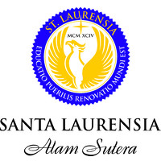
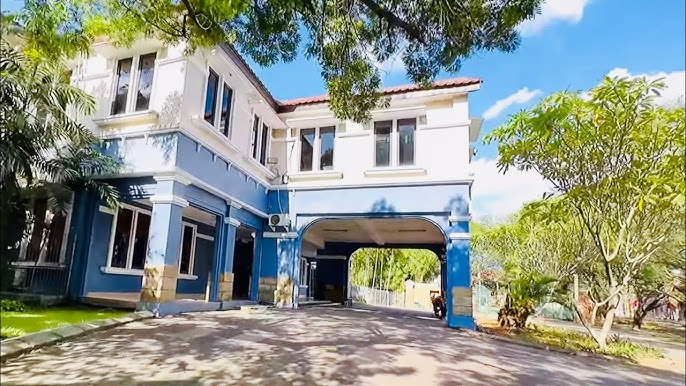
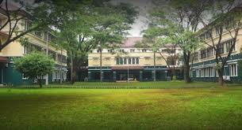

It is where Nursey and
This is where Primary School is taught. I first joined Santa Laurensia in first grade, and studied here.

The Teresa building is next to the Einstein building and houses many rooms such as the library, chemistry and physics lab, and also a dance room.
The last building is where SMP and SMA learn. I'm currently studying here.

The link below is to go back to the home page
Home Page